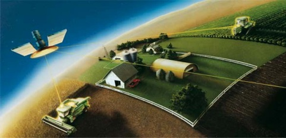

ГЛОНАСС и GPS. В чем отличие?

Система спутниковой навигации ГЛОНАСС давно известна потребителям устройств на windows под названием «навигаторы», а вот остальной части россиян было более известна навигация на базе GPS.
С тех пор, как появились новости об установке (
установка windows) в городском транспорте систем ГЛОНАСС,
появились вопросы – а нужно ли это, и если да, то зачем? Ставя вопрос шире: зачем вообще дублировать «народный» GPS?
Проблема в том, что GPS – вовсе не народная система спутниковой навигации, а типично американская. Сейчас она базируется на основе 30 спутников и систем наземной коррекции, которые
предоставляют координаты любому приемнику GPS за 2-3 секунды с точностью до 1-2 метров. ГЛОНАСС имеет 19 спутников, откликается в течение 4-5 секунд и «грешит» от 10 метров и более.
Есть еще китайская система COMPASS и европейская GALILEO, которые не делают особой погоды. Погрешность определения координат – условная величина, которая зависит от потребителя:
гражданским выдают данные похуже, а военным – на порядок более точную; с точки зрения военных, разницы между этими системами практически нет. У GPS охват территории – весь земной шар,
у ГЛОНАСС – до 90% стран бывшего СССР и около 60% земного шара. «Невидимые области» могут вызывать раздражение у путешественников в экзотические точки Земли,
где приемник будет просто молчать.
С другой стороны, всецело доверять GPS тоже нет смысла – сигнал технологически легко отключить от потребителей целых стран, которые вступят в конфликт с США, а Россия, как известно,
уже давно не является ее желанным другом.
Так что иметь свою систему жизненно необходимо.
Немногие знают, что приемник принимает сигнал в наиболее простом виде: широта, долгота – так, как учили в школе на географии. Многим и этого достаточно, но потребителям попроще нужен
более удобный вариант. Такой вариант реализуется подключением точных карт местности, привязанных к сетке координат. Системы навигации могут обслуживать даже движущийся приемник, так что
стало возможным создавать удобные автомобильные навигаторы, привязывать их к дорогам и даже отмечать на карте полезные организации, заправки, общественные здания, рекламу. ВПО стали
встраивать и голосовое оповещение. Следует лишь помнить, что в России огромное число городок и местностей подобных карт не имеют, поэтому движение будет как по Антарктиде – по пустой
карте. Карты бывают двух видов – растровые и векторные, и вторые стали более востребованными в силу компактности и наглядности.
А сейчас все чаще их начинают выполнять в 3D виде.
Лучший магазин компьютеров в Бресте - это интернет-магазин компьютерной техники в Бресте
на сайте brest.cooler.by, лучшие цены, доставка домой.
Читайте также:
Автомобильные видеорегистраторы.
Wi-Fi. Что же это такое?
Следующая статья:
3D видео без очков. Технология будущего.